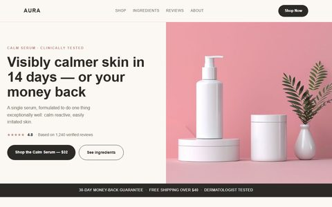

Una marca de cosmética en venta directa invierte en tráfico de pago (Meta e Instagram Ads) hacia una página de producto genérica: una foto, un precio, un botón de «Añadir al carrito» — y poco más. Sin un motivo claro para comprar ahora, sin señales de confianza visibles, y un proceso de pago que te pide crear una cuenta antes de pedirte la tarjeta.
El resultado: un coste por clic razonable, pero una tasa de conversión que no cubre la inversión publicitaria. El problema no es el tráfico: es lo que pasa después del clic.
| Elemento | Problema | Impacto |
|---|---|---|
| Portada | Imagen genérica sin promesa clara — no responde a «¿esto qué me da a mí?» en los primeros 3 segundos. | Alto |
| Prueba social | Hay reseñas (4,8★/1.240), pero enterradas por debajo del primer scroll — invisibles justo en el momento de decidir. | Alto |
| Urgencia | Ningún motivo para comprar hoy en vez de «más tarde» — y en e-commerce «más tarde» casi nunca llega. | Medio |
| Proceso de pago | Obliga a crear cuenta antes de pagar — la fricción clásica que dispara el abandono del carrito. | Alto |
Antes de tocar el diseño visual definimos qué pregunta responde cada bloque y en qué orden — la misma lógica del Mapa de Oportunidades (Atracción → Conversión → Retención) que aplicamos a cualquier cliente real.
Cada bloque responde una sola duda del comprador: qué me da a mí, puedo fiarme, por qué ahora.

Portada partida: promesa + valoración + botón a la izquierda, producto real a la derecha — nada compitiendo por la atención.
Las decisiones de esta página, explicadas:
Sin rehacer la marca de cero, la paleta se redujo a tres tonos — rosa, gris y blanco — para reforzar el posicionamiento de «calma para piel reactiva»: nada agresivo y mucho espacio en blanco.
«El tráfico ya se estaba pagando. El problema nunca fue conseguir visitas: fue lo que la página hacía con ellas.»